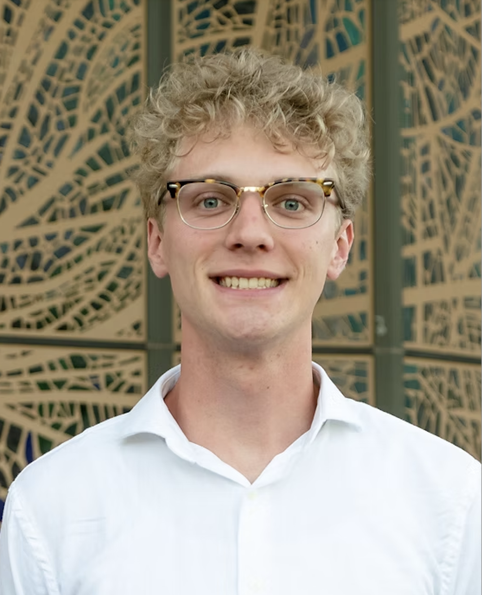

Keaton A. Raney
Catalyzing Inquiry
Ph.D. student using light and spin to turn molecules and materials into quantum sensors.

Keaton A. RaneyPh.D. Student, Department of Chemistry
The University of Texas at Austin
Asking how things work, then building the tools to find out
Keaton Raney is a first-year Ph.D. student in physical chemistry at The University of Texas at Austin, co-advised by Prof. Sean Roberts (Chemistry) and Prof. Xiaoqin Elaine Li (Physics). His research is in quantum sensing: using the optical and spin properties of molecules and materials to measure the nanoscale world with exceptional sensitivity. He is helping build a new optically detected magnetic resonance (ODMR) instrument and trains across both groups, in time-resolved and ultrafast spectroscopy with the Roberts lab and in 2D-material sample preparation and device fabrication with the Li lab.
His route to physical chemistry has been unusually wide. He started college on a biology track, studying quorum sensing in bacteria and protein assembly in the mevalonate pathway, then fell for physical chemistry and took on extra mathematics to follow it. Along the way he synthesized osmium organometallic complexes as hydrogenase mimics at Abilene Christian University and, as a Southern California Edison WAVE Fellow at Caltech, designed a laser experiment to watch carbon radicals recombine. He earned his B.S. in Chemistry from ACU in 2026, with minors in biology and history.
Keaton is happiest working on questions that sit between fields. Outside the lab he draws in charcoal, runs, collects more books than he can read, and thinks about what the long history of science, philosophy, and religion can teach us today.
More about my work
Research
Quantum sensing at UT Austin, plus earlier work in laser spectroscopy, organometallics, and biochemistry.
Read moreHonors & Awards
Fellowships, scholarships, and recognition, including a Texas Leadership Research Scholarship and a Rhodes/Marshall nomination.
See honorsTeaching & Service
Teaching chemistry labs at UT Austin and ACU, tutoring, mentoring, and student leadership.
Read moreCurriculum Vitae
Education, research experience, presentations, honors, and skills on one page, ready to print or save as a PDF.
View CVBeyond the Lab
Charcoal drawing, distance running, a growing bookshelf, and the history of science and faith.
Read moreGet in Touch
Questions, collaborations, or a good book recommendation are always welcome.
ContactRecent milestones
- Sep 2026
Named a Texas Leadership Research Scholar
A competitive state doctoral scholarship with peer mentoring and leadership development, renewable for up to four years.
- Aug 2026
Began a Ph.D. in physical chemistry at UT Austin
Joined the Roberts (Chemistry) and Li (Physics) groups to work on quantum sensing.
- May 2026
Graduated from Abilene Christian University
B.S. in Chemistry with minors in biology and history; received the Paul C. Witt Award and was named a University Scholar.
- Oct 2025
Rhodes and Marshall nomination
One of two students nominated and endorsed by ACU for the Rhodes and Marshall Scholarships. The same month, presented undergraduate research at the Joint SERMACS/SWRM ACS Regional Meeting in Orlando.
- Summer 2025
WAVE Fellow at Caltech
Experimental astrochemistry in the Okumura group, studying reactive carbon radicals with laser spectroscopy.